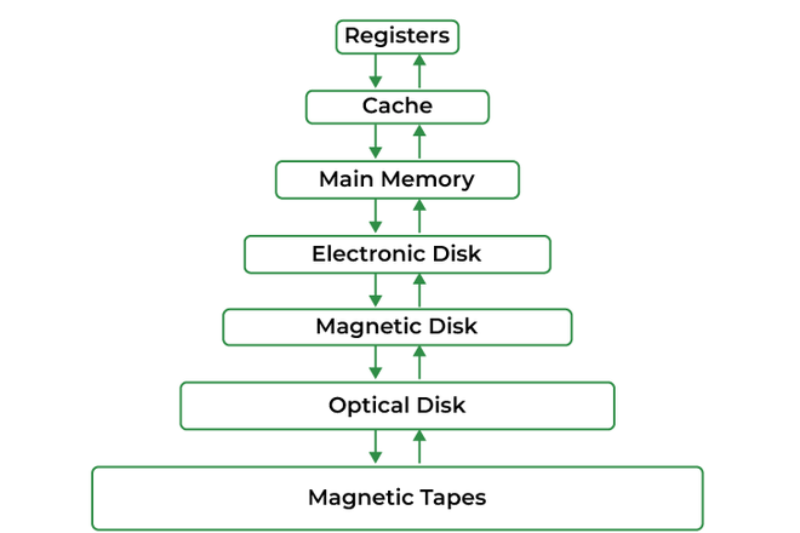

Configurable Geometry
Cache capacity, associativity, and block size are supplied at runtime. The simulator derives the number of sets and the width of every address field from those values.
This project is a command-line cache simulator that I developed in Java for Duke's Computer Architecture course. It models the movement of data between a processor cache and a 24-bit main-memory address space while processing a trace of load and store operations.
The simulator supports configurable cache capacity, block size, and associativity. For every memory access, it determines the block offset, set index, and tag; searches the appropriate cache set; reports whether the access was a hit or miss; and performs any required allocation, replacement, or write-back operation.

The cache sits between the processor and main memory, retaining recently accessed blocks so future accesses can be completed faster.
The simulated cache is represented as a three-dimensional byte array indexed by set, way, and byte offset. Parallel arrays store each cache line's tag, valid bit, and dirty bit. This layout lets the same implementation simulate direct-mapped, set-associative, and highly associative caches simply by changing the command-line configuration.
Cache capacity, associativity, and block size are supplied at runtime. The simulator derives the number of sets and the width of every address field from those values.
Each access searches every way in its selected set. A hit requires both a matching tag and an asserted valid bit.
Every set maintains its own replacement pointer. When a new block is installed, the pointer advances to the next way, producing a first-in, first-out replacement policy.
Stores update the cached copy and mark its line dirty. Modified data is written to main memory only when that line is evicted.
A store miss first loads the complete block from memory into the cache. The requested bytes are then updated in the newly allocated line.
The trace format supports multi-byte loads and stores. Values are reconstructed from individual bytes and printed in hexadecimal with the correct width.
Each 24-bit memory address is divided into a tag, a set index, and a block offset. Because the configuration values are powers of two, the simulator calculates these fields using shifts and bit masks instead of division or modulo.
sets = cache size / (associativity × block size)
offset bits = log₂(block size)
index bits = log₂(number of sets)
tag bits = 24 − index bits − offset bits
| Access | Hit | Miss |
|---|---|---|
| Load | Read the requested bytes from the matching cache line. | Choose the next FIFO way, write back a dirty victim if necessary, load the requested block, and return its data. |
| Store | Update the matching line and mark it dirty. | Perform write-allocate, update the requested bytes, and mark the newly installed line dirty. |
The central data structures mirror the organization of a real set-associative cache. The first index selects a set, the second selects a way, and the third selects an individual byte.
final int cacheSize = 1 << (10 + log2(
Integer.parseInt(args[1])
));
final int associativity = Integer.parseInt(args[2]);
final int blockSize = Integer.parseInt(args[3]);
final int numSets = cacheSize / (associativity * blockSize);
final byte[][][] cache =
new byte[numSets][associativity][blockSize];
boolean[][] validBits = new boolean[numSets][associativity];
boolean[][] dirtyBits = new boolean[numSets][associativity];
int[][] tags = new int[numSets][associativity];
// Each set has an independent FIFO replacement pointer.
int[] whereToPut = new int[numSets];
int blockBits = log2(blockSize);
int setIndexBits = log2(numSets);
int setMask = (1 << setIndexBits) - 1;
int setIndex = (address >> blockBits) & setMask;
int tag = address >>> (setIndexBits + blockBits);
int offset = address & ((1 << blockBits) - 1);The simulator reads one memory access per line. Store operations include the value to write, while loads specify an address and a byte count. Its output exposes the cache's behavior by identifying hits, misses, replacements, and dirty write-backs.
store 0xd53170 4 7d2f13ac
load 0xd53172 1
store 0xd53170 2 f0b1
load 0xd53170 4store 0xd53170 miss
load 0xd53172 hit 13
store 0xd53170 hit
load 0xd53170 hit f0b113acThe project includes an automated test matrix with 53 cache configurations. The tests vary capacity from small one-kilobyte caches to larger 128-kilobyte caches, associativity from one to sixteen ways, and block sizes from four to 512 bytes.
Verifies byte ordering, offsets, repeated accesses, and correct values after stores.
Sends several addresses to the same set to verify FIFO victim selection and clean or dirty eviction reporting.
Exercises accesses near the edges of cache blocks and checks offset calculations for different block sizes.
Varies cache capacity and associativity to confirm that set count and address decomposition adapt correctly.
Walks through memory using several access and block sizes, demonstrating spatial locality and repeated cache hits.
Uses larger randomized workloads to test the complete cache state machine under many interleaved loads and stores.
Building the simulator turned cache organization from an abstract diagram into a concrete algorithm. I had to reason carefully about how a single address maps to a set, how tags distinguish blocks mapped to that set, and how valid and dirty metadata change after every operation. The project also showed how replacement and write policies interact: a store can affect main memory much later than the original instruction, when an unrelated access eventually evicts the dirty line.